Nyzo version 551 (commit on GitHub) corrects an issue with cycle transaction registration. It also contains several inconsequential changes to improve the quality of the codebase.
This version affects primarily the verifier. It contains inconsequential changes that involve other run modes but do not affect their behavior significantly.
In the CycleTransactionManager.registerTransaction() method, two additional checks have been added before attempting to add a transaction to the map. The first, checking for an existing signature, prevents re-registration of a transaction already in the map. This is the most consequential change in this version, because such re-registration would cause signatures that had been collected for the existing transaction to be lost.
The second check provides proper feedback when the new transaction has an earlier timestamp than the existing transaction. This does not change the behavior of the method — the merge method already chooses the transaction with the later timestamp — but it does communicate the results of the registration process better.
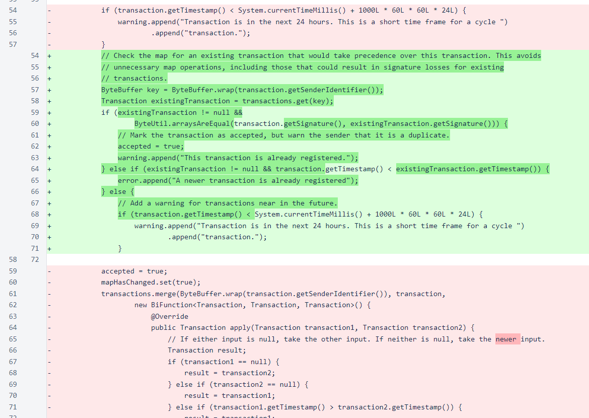In the registerSignature() method, the return value of the Transaction.addSignature() method is now considered before marking that the transaction has been registered and the map has changed. Note, when reading the Transaction.addSignature() method, that a check is not performed to see if the transaction is already in the map. So, that method and this method will both return a value of true for a signature that is otherwise valid, even if that signature has been registered previously.
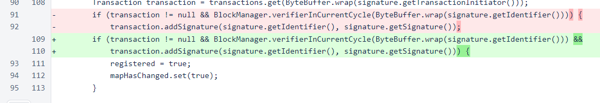In MeshListener, the underscore has been removed from several enumeration names. This is solely for consistency, and it is explained further below.
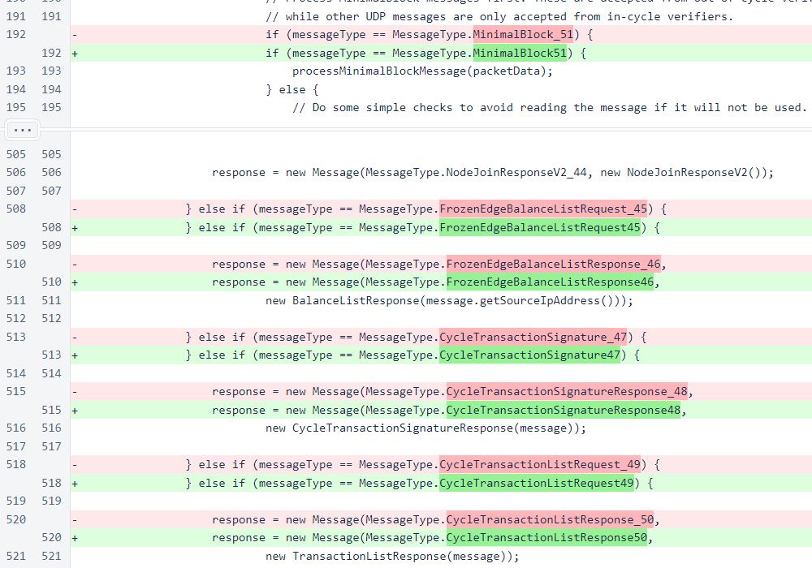In Message, similar enumeration name changes were also applied.
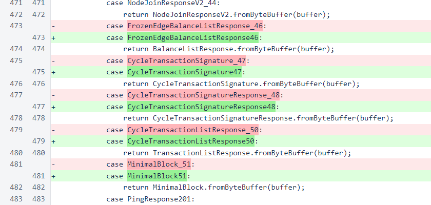In the MessageType enumeration, the reason for the name changes is apparent. Prior to the introduction of "V2" messages, none of the enumeration names contained underscores. Underscores are generally uncommon in Java identifiers. In the V2 messages, underscores were necessary to separate the numerical message value. When the FrozenEdgeBalanceListRequest_45 message type was added, an underscore was used, following the pattern of the NodeJoinResponseV2_44 message type above it. However, the underscore was inconsistent with most values in this enumeration. Underscores continued to be used for new messages in this part of the list, through MinimalBlockResponse_52. This issue was noted in a routine code review and corrected to reduce inconsistencies in the code base.
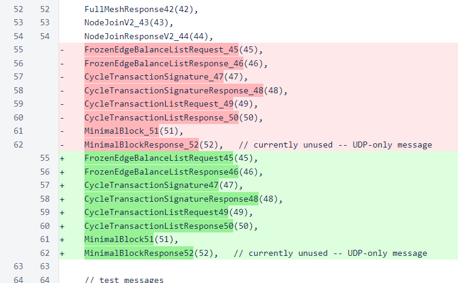Unused imports were removed from SeedTransactionManager.
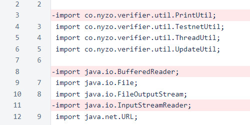To simplify testing of cycle transactions on a testnet, the TestnetGenesisBlockCreator now generates the system's coins directly into the cycle account.

The addSignature() method in the Transaction class now returns a value indicating whether the signature was added to a transaction.
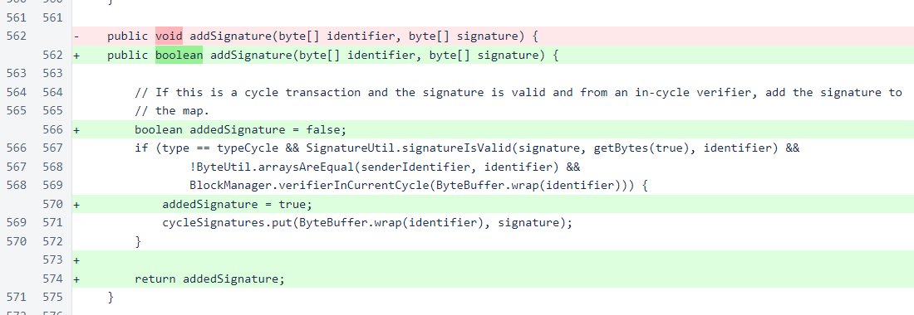In Verifier, the process that retrieves and freezes the Genesis block now checks to ensure that the Genesis block is actually frozen.
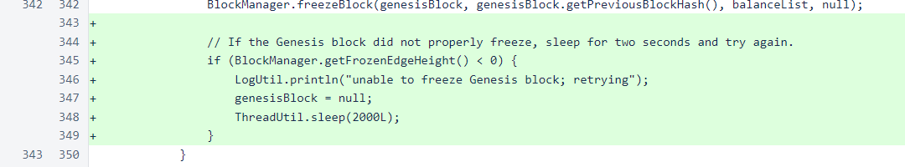ClientTransactionUtil, CycleTransactionListCommand, and TransactionListResponse also contain MessageType enumeration value changes.
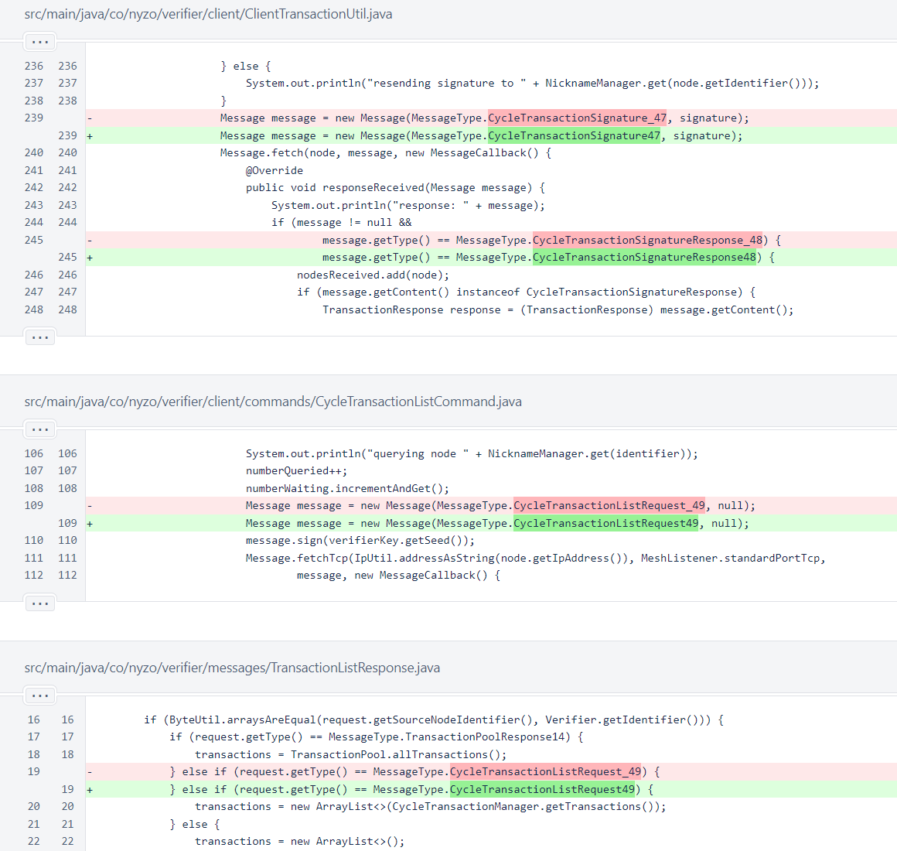In NyzoStringEncoder, a case has been added for the new Signature type, and the Micropay case has been moved to order all cases alphabetically.
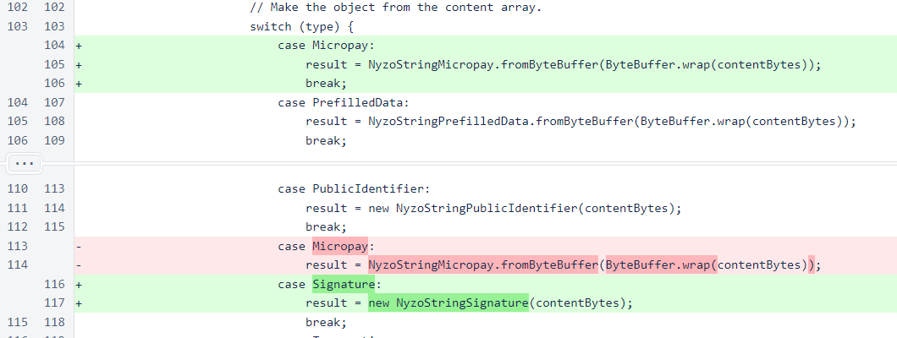The new NyzoStringSignature class wraps a signature for use in a Nyzo string.
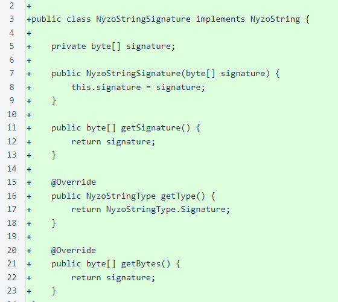The prefix sig_ is used for the new Signature Nyzo string type.

In Sentinel, minor modifications have been implemented to ensure that the managed verifiers are properly loaded and accessible outside the typical sentinel initialization sequence.
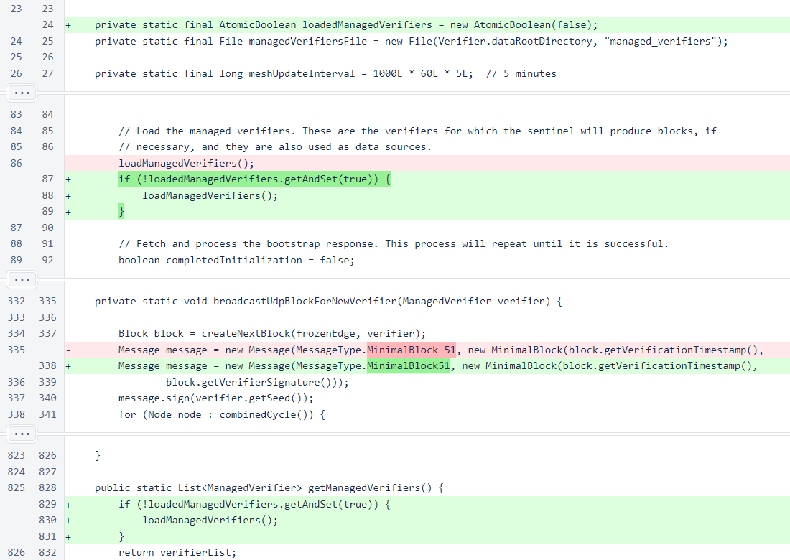In WebUtil, a convenience method has been added for providing sender-data strings that are sanitized for use in HTML.

In HtmlTag, a check has been added to ensure null entries are not added to the elements list.